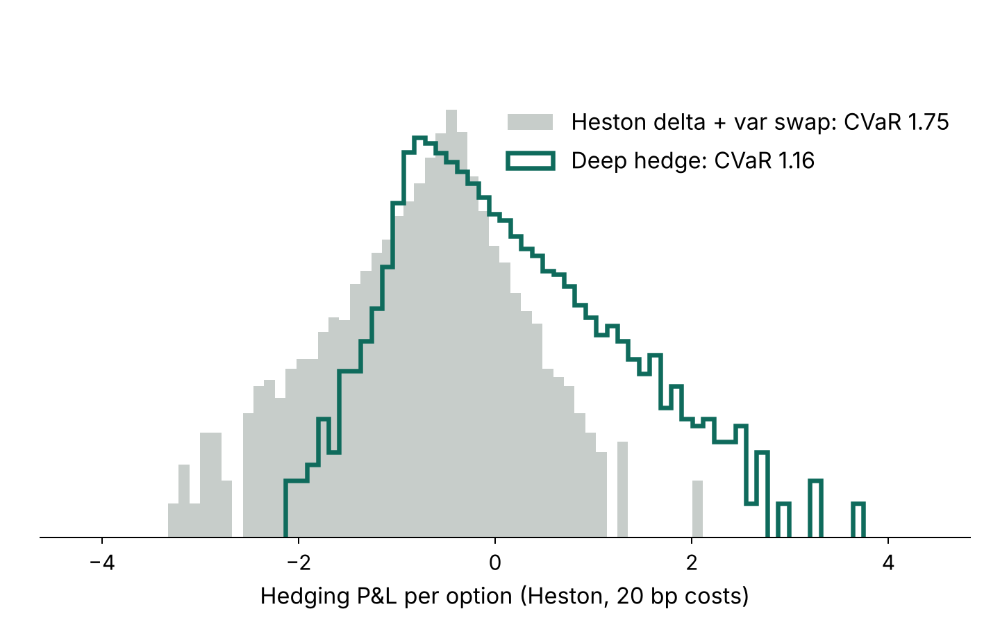

DEEP LEARNING · DERIVATIVES · 2026

Deep Hedging of Options
- Trained a neural network in PyTorch to hedge a short option under transaction costs and Heston stochastic volatility (calibrated to SPX options), minimising the 95% tail loss (CVaR).
- On 100,000 unseen paths it cut tail loss by 33% versus Heston delta plus a variance swap, and by 4–11% versus delta hedges with a tuned no-trade band.
- With costs it learned to trade less (1.06 vs 2.27 shares per path at 20 bp) and held up out of sample on 16 years of real NIFTY 50 paths.
PyTorchHestonMonte CarloCVaR